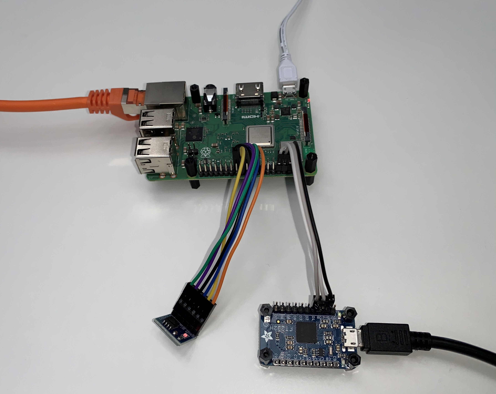

RPi3B+ Platform¶
The following sections will provide all information required to successfully boot TRENTOS on the Raspberry Pi 3 Model B+ (RPi3B+) using the 32-bit mode.
All given information should also be applicable to the Raspberry Pi 3 Model B, but this has not been tested.
Subpages¶
Boot Mode¶
In general, the RPi3B+ offers different boot modes (see https://www.raspberrypi.org/documentation/hardware/raspberrypi/bootmodes/).
For booting TRENTOS, the SD card-based boot mode is selected.
Boot Flow¶
The SD card-based boot flow of the RPi3B+ consists of several individual steps. When powering on the board, the VideoCore GPU is activated and the Stage 1 (S1) bootloader stored in ROM gets started. The GPU executes S1 on a small RISC core and S1 then
mounts & reads the SD card
loads the Stage 2 (S2) bootloader (from a FAT16/32 formatted file system on the SD card) into the GPU’s L2 cache
executes S2 on the GPU
To be able to load the S2 bootloader and continue the boot process, the SD card has to be prepared with the respective binary files accordingly.
Prerequisites¶
The RPi3B+ expects several binary files to be placed on the SD card in order to boot a TRENTOS system successfully. These required files can be clustered into the following types:
RPi3B+ firmware
U-Boot bootloader
TRENTOS system
Configuration
The required files and their meaning are explained in the following:
Type |
Blob |
Usage |
|---|---|---|
RPi3B+ firmware |
bootcode.bin |
S2 bootloader, which |
start.elf |
Stage 3 (S3) bootloader, which |
|
fixup.dat |
Linker files required for the S3 bootloader. |
|
U-Boot |
u-boot.bin |
S4 bootloader, which loads the TRENTOS system image. |
uboot.env |
A configuration file, containing the information required by the S4 bootloader. |
|
TRENTOS |
os_image.elf |
The TRENTOS system image, containing the TRENTOS OS (seL4 kernel & TRENTOS userland) and applications. |
Configuration |
config.txt |
Contains relevant configuration parameters for setting up the RPi3B+. |
The following sections explain more in detail, where and how the required files can be obtained.
RPi3B+ Firmware¶
The three RPi3B+ firmware files can be obtained in binary form from the official GitHub resources of the Raspberry Pi Foundation: https://github.com/raspberrypi/firmware/tree/master/boot.
U-Boot¶
Info: You may find an already built u-boot.bin image in the SDK’s
resources/rpi3_sd_card, so you may want to skip this paragraph.
Preparations for Building U-Boot from Source¶
If you want to build the required U-Boot binary directly from the source, first ensure that all the necessary packages are installed:
sudo apt install gcc-arm-linux-gnueabi u-boot-tools flex bison
Building U-Boot¶
Before building U-Boot, the source code has to be obtained from the official git repository:
git clone https://gitlab.denx.de/u-boot/u-boot.git
As an alternative, there also exists a GitHub mirror:
git clone https://github.com/u-boot/u-boot.git
For the purpose of this tutorial, it is recommended to check out the
version 2020.07-rc3 (commit hash
8c48bb21bd6a1778d1f299de30ff62c07929702b) since the rest of the steps
have been tested with this version. However, building a working U-Boot
requires the commit 995eab8b5b580b67394312b1621c60a71042cd18 to be
reverted. The default U-Boot will not succeed to boot a seL4 image due
to cache configuration issues in the ELFLoader. Therefore, caches have
to be disabled in U-Boot before loading seL4, which is done by reverting
the mentioned commit before building U-Boot.
cd u-boot
git checkout v2020.07-rc3
git revert 995eab8b5b580b67394312b1621c60a71042cd18
In general, U-Boot on the RPi3B+ can be run in two modes: 32-bit and 64-bit. As a default environment, the 32-bit version is selected.
make CROSS_COMPILE=arm-linux-gnueabi- distclean
make CROSS_COMPILE=arm-linux-gnueabi- rpi_3_32b_defconfig
make CROSS_COMPILE=arm-linux-gnueabi-
After the build ran successfully, the folder should now contain the
U-Boot binary named u-boot.bin.
U-Boot Configuration¶
When starting up U-Boot for the first time, a user has to interrupt autoboot (during the terminal output “Hit any key to stop autoboot”) by pressing any key. The output looks like the following:
U-Boot 2020.07-rc3-00002-g4b6f96a0a6 (May 26 2020 - 18:38:13 +0200)
DRAM: 948 MiB
RPI 3 Model B+ (0xa020d3)
MMC: mmc@7e202000: 0, sdhci@7e300000: 1
Loading Environment from FAT... *** Warning - bad CRC, using default environment
In: serial
Out: vidconsole
Err: vidconsole
Net: No ethernet found.
starting USB...
Bus usb@7e980000: USB DWC2
scanning bus usb@7e980000 for devices... 4 USB Device(s) found
scanning usb for storage devices... 0 Storage Device(s) found
Hit any key to stop autoboot: 0
U-Boot>
Afterwards, U-Boot allows for configuration changes with:
setenv bootcmd 'fatload mmc 0 0x10000000 os_image.elf;bootelf 0x10000000'
saveenv
The resulting configuration is then saved to the uboot.env file
on the SD card. In order to boot the system, it is enough to enter the
command ‘boot’ or reset the board and wait for autoboot.
TRENTOS¶
The TRENTOS image has to be built according to the official build process.
Configuration¶
The config.txt configuration file has to be created independently
from the prebuilt RPi3B+ firmware files. Further information regarding
potential configuration parameters is documented here:
https://www.raspberrypi.org/documentation/configuration/config-txt/README.md
For booting up the RPi3B+ with TRENTOS, the following parameters must be
provided in the config.txt file:
enable_uart=1
kernel=u-boot.bin
core_freq=250
dtparam=spi=on
enable_jtag_gpio=1
It is required to set the core_freq parameter to a fixed value of
250 MHz as the UART will be transmitting garbage otherwise.
Boot Up¶
After having prepared the SD card, the RPi3B+ is ready to use. Nevertheless, it might be helpful to receive some command line output via serial output, in order to verify that the board is actually booting up and the specified TRENTOS system is executing successfully. Therefore, a UART-to-USB adapter is required, which connects the RPi3B+ to a PC.
The adapter has to be connected to the RPi3B+ based on the pinout description found at https://pinout.xyz/pinout/uart (the orientation of the connection header with respect to the board is visible here https://www.raspberrypi.org/documentation/usage/gpio/). The following example setup will demonstrate how to connect the RPi3B+ to the Adafruit FT232H Breakout Board (https://www.adafruit.com/product/2264).
UART Signal |
Cable Color |
RPi3B+ Pin |
Adafruit FT232H Pin |
|---|---|---|---|
GND |
black |
P6 |
GND |
TXD |
white |
P8 |
D1 |
RXD |
grey |
P10 |
D0 |
Once the cables have been connected to the respective pins, it should result in the setup shown below.


In a new terminal start a serial monitor that shows the traffic received
from the UART-to-USB adapter. One way of doing this is to use
the picocom utility with the following command:
sudo picocom -b 115200 /dev/<ttyUSBX>
Hereby, <ttyUSBX> acts as a placeholder for the specific device
representing the USB-to-UART adapter, e.g. ttyUSB0. Note that
using sudo may not be required, this depends on your Linux group
membership giving your account access to /dev/<ttyUSBX>.
The board can now be powered and a result similar to the one below shall be printed on the terminal:
U-Boot 2020.07-rc3-00002-g4b6f96a0a6 (May 26 2020 - 18:38:13 +0200)
DRAM: 948 MiB
RPI 3 Model B+ (0xa020d3)
MMC: mmc@7e202000: 0, sdhci@7e300000: 1
Loading Environment from FAT... OK
In: serial
Out: vidconsole
Err: vidconsole
Net: No ethernet found.
starting USB...
Bus usb@7e980000: USB DWC2
scanning bus usb@7e980000 for devices... 4 USB Device(s) found
scanning usb for storage devices... 0 Storage Device(s) found
Hit any key to stop autoboot: 0
8307348 bytes read in 349 ms (22.7 MiB/s)
## Starting application at 0x00b1e000 ...
ELF-loader started on CPU: ARM Ltd. Cortex-A53 r0p4
paddr=[b1e000..12e40c7]
No DTB passed in from boot loader.
Looking for DTB in CPIO archive...found at c20568.
Loaded DTB from c20568.
paddr=[37000..3afff]
ELF-loading image 'kernel'
paddr=[0..36fff]
vaddr=[e0000000..e0036fff]
virt_entry=e0000000
ELF-loading image 'capdl-loader'
paddr=[3b000..723fff]
vaddr=[10000..6f8fff]
virt_entry=17e48
Enabling MMU and paging
Jumping to kernel-image entry point...
Bootstrapping kernel
Booting all finished, dropped to user space